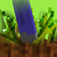

Oh, wow, this is awkward...
It seems you found my website. Congrats! I knew you could do it!
Now for your reward, I have hidden a key somewhere inside your r--
What's that? Someone already did that? Saw?
Okay, so my PR team said I can't do that. Something about human decency and copyright law, so, um... Here's a list of my socials and projects I work on. Enjoy!
Socials


Project Vinyl
A music and video archive for the fandom! ProjectVinyl is sponsored by The Pony Archive and was envisioned as a pony-centric alternative to youtube.Mine Little Pony
Originally created by Verdana, Mine Little Pony is an OG minecraft mod with the aim of bringing magic and friendship to the world of minecraft! It turns the player and most mobs into ponies, and features a custom skin server (using HD Skins) for players to upload their skins to.
After Verdana's retirement, I eventually adopted the project and continue to support it to this day, addition new features and bug fixes for the latest version of Minecraft.
Unicopia
My own creation, this mod aims to bring further pony capabilities to minecraft!
What started as a humble teleporting mod for me to play as a unicorn has gradually evolved into a complete gameplay experience, with unique abilities and items for each race, new types of blocks, foods, farming, and an in-depth megic and spell system.
Presence Footsteps
 Another OG mod, this time by Huricaaaane (or simply Ha3). Presence Footsteps enhances the gameplay experience by adding unique and distinct sounds for a lot of minecraft's blocks. It's fully configurable and moddable.
Same as what happened to Mine Little Pony, I picked up support of this mod after Ha3's retirement.
FimFiction Advanced + More

Do you read or write fanfiction? Do you use Fimfiction? Ever wish Fimfiction was better?
Well this script might just be for you! Fimfiction Advanced adds several enhancements to fimfiction that I saw it needed, as well as brings back several OG features that knighty has slowly removed over the years. It really does feel like an entirely new site when you install this.
Custom Booru Colour Schemes
Tired of browsing a website themed around a character you don’t like or with an obvious pandering to an inferior background pony, or that follows filthy standard?
Well worry no more! With the Sweet Apple Acres’ patented Jackybooru Theme you too can browse the internet as intended by the superior background pony race.
Other changes include:
-
Applied Apple’s nomenclature where appropriate
- Galleries are now the objectively superior Orchards
- Instead of notifications you now get apples (they’re sweet and delicious! :D)
- No more posting. You can only apple.
Can't get enough of Jackybooru? Try these other great styles!
Twilibooru - a Twilight Sparkle Theme
Sparklebooru - a darker Twilight Sparkle Theme
Partibooru - a Pinkie Pie Theme
Dressabooru - a Rarity of a Theme
Top Reviews:
Derpibooru Emoticons!
Tired of your comments being lifeless and boring? Ever wish ponies would look at you and go: Wow, this guy’s smart, charismatic, and handsome!
Well look no further! I have the userscript for you! Derpibooru emoticons adds a grand total of 56 cute pony themed emoticons – emotiponies to liven up your comment section!
They won’t make anypony charismatic or handsome, but ponies will certainly notice your smart use of emoticons!
Get it now from the links below, for a limited time+ offer of free!
+ Time may not actually be limited
Make Badges Wrap Again!
Ever think to yourself “Gee, I sure do love collecting badges!”? Yes, you know who you are. This style is for you.
Make Badges Wrap Again (or MBWA for short) does exactly what the name implies! It removes those pesky little overflows that prevent the site from breaking under the weight of your own awesomeness and forces it to display all of your precious achievements at once!
Finally, we can let it all hang out!
Before:After:
Looking for the previous version of this page?
It's over here!More Fun Stuff
Try Rainbow OS! (Disclaimer: It's very old and unfinished)And the never-used about page for fimfiction advanced
Want a handy list of pony emoticons?